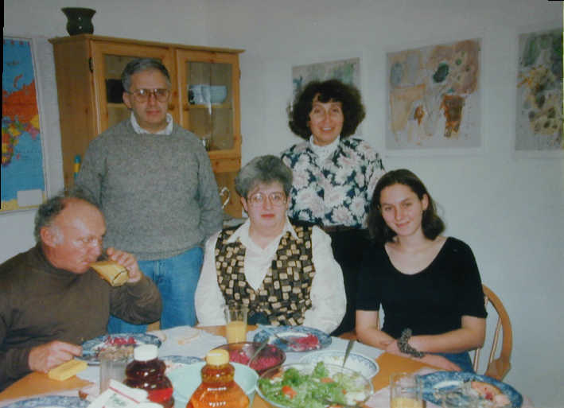

| Prof.I.I.Piatetski-Shapiro, 2002 my former advisor, in his apt in New Haven, CT, about 1997, with wife Edit (standing) daughter, and Prof.Margulis (standing) with his wife Raya.  |
Graduate Studentsof L.N.Vasersteinwho completed their degrees |
tahoe1tahoe2
My office about 1997 |
| Name |
title of the paper |
Degree |
Year |
picture |
address |
| José Joaquin Ferro |
title |
M.A. |
1984 |
Colombia |
|
| Mike Dutko |
title |
Ph.D., |
1984 |
his dept |
Scranton
U, PA d. Nov 3, 2003 |
| Dan Otero |
title |
Ph.D., |
1987 |
otero@xavier.xu.edu publ |
|
| Ted Gordon |
title
graphs |
M.A. |
1988 |
Bellcore, NJ |
|
| Joyce Riley |
knots title |
M.A. |
1991 |
in class
with Ethel |
Bloomsburg U,
PA |
| Yue Ye |
ODE |
M.A. |
1992 |
my office |
Johnson & Johnson, NJ |
| Mike Brown |
OR |
M.A. |
1993 |
Progressive
Business Publ. |
|
| Wai-Hon Leung |
OR title |
M.A. |
1993 |
||
| Frank Arlinghaus |
algebra |
Ph.D. |
1994 |
in class |
Fed |
| Donna Hamao-Langdon |
M.A. |
1994 |
statistics
dept |
State College |
|
| Chris Byrne |
games |
Ph.D., |
1995 |
in my class |
PSU |
| Ethel Wheland |
algebra |
Ph.D., |
1996 |
MB
near
SC |
Akron U,OH |
| Mihai Caragiu |
algebra |
Ph.D., |
1996 |
pic| pic| pic |
Ohio Northen
U publ |
| Asya Semenovich |
billiards |
Ph.D., |
1996 |
pic| pic |
industry |
| Marianna Dizik |
algebra title |
M.A. |
1996 |
her apt |
industry |
| Mduduzi
Keswa |
LP title |
M.A. |
1996 |
pic |
PSU |
| Greg Bloy |
title |
Ph.D. |
1996 |
pic |
Fed |
| Chris Horgan |
OR title |
M.A. |
1997 |
Navy |
|
| Armando Raul Villaroel |
games title |
M.A. |
1999 |
my apt |
industry |
| Rachel Gar-El |
number theory |
M.A. |
1999 |
dracula
| movie star |
industry |
| Hari Prasad Thadakamalla |
complex networks |
M.A. |
2007 | industry |
Honor students: Jerusha Achterberg 2001 ps
(pic)
|
{kind=link}
{kind=link}
{kind=link}
{kind=link}
{kind=link}
{kind=link}
{kind=link}
{kind=link}
{kind=link}
{kind=link}
{kind=link}
{kind=link}
{kind=link}
{kind=link}
{kind=link}
{kind=link}
{kind=link}
{kind=link}
{kind=link}
{kind=link}